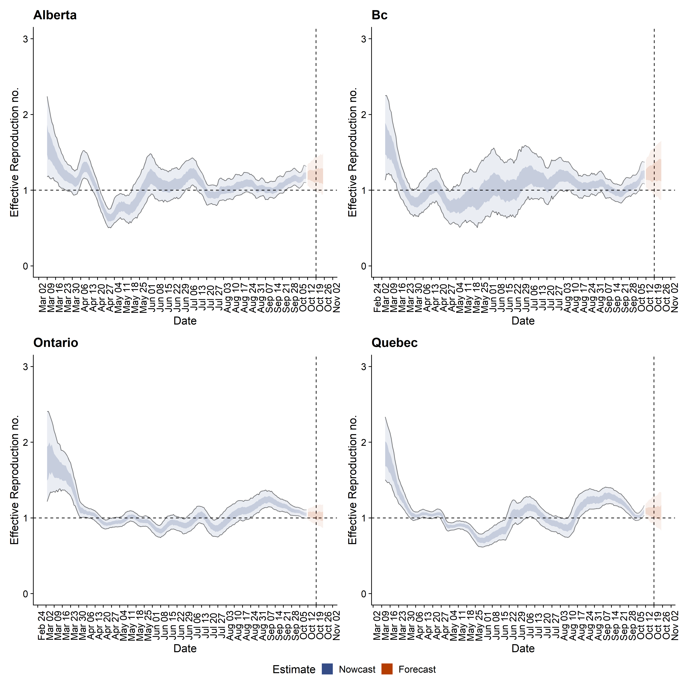
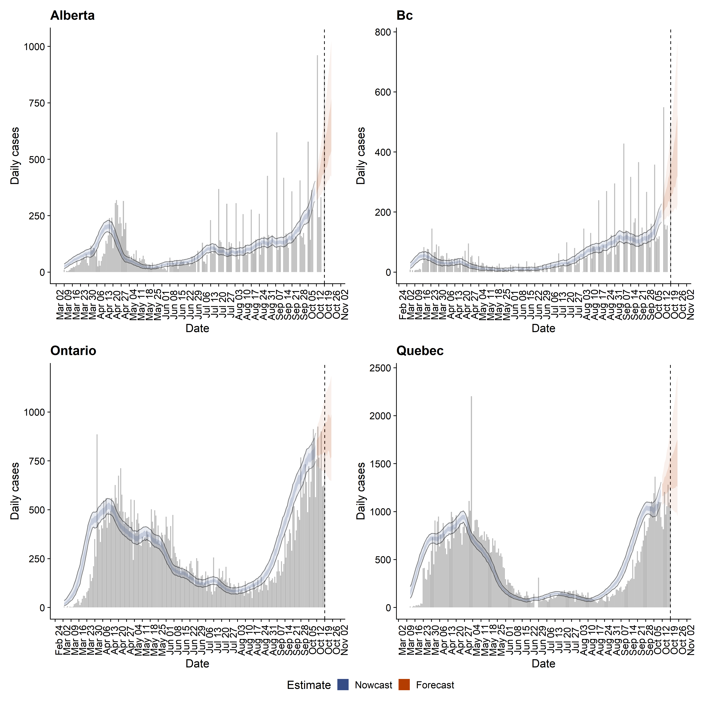
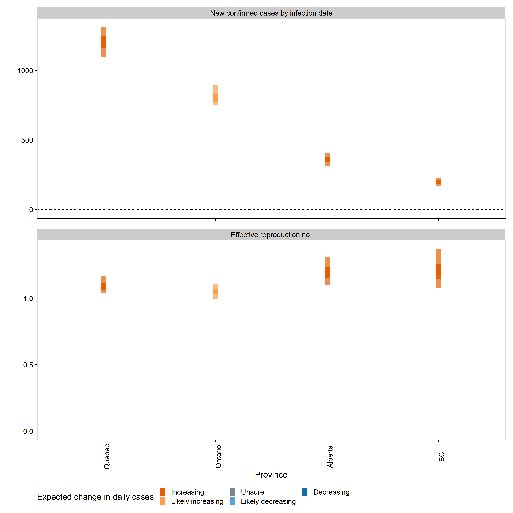

Date Created: Jun 01, 2020
Date Updated: Oct 20, 2020
For estimation methods please see https://epiforecasts.io/covid/methods.html.
In a nutshell, the reproduction number is estimated with a stochastic (infection) generation model under a Bayesian framework using MCMC with an informative gamma prior (mean 2.6 and standard deviation 2, based on initial Wuhan R0 estimates).
Estimation of R0 accounts for reporting delay, that is defined as the time between sympton onset and reporting. The delay time distribution is estimated using an international data (avaliable at https://github.com/epiforecasts/NCoVUtils) while sympton onset date and reporting date are both recorded. Unfortunately, there is no open-access data on such information in Canada, so there could be potential bias using an estimate of this delay from data of other Countries.
Last but not least, a 14-day forecast of R0 is conducted with the ensumble time series models using the forecastHybrid R package developed by David Shaub and Peter Ellis.
Complete model output generated from the EpiNow R package is available at https://github.com/Kuan-Liu/Kuan-Liu.github.io/tree/master/docs/regional-summary. You can find here, 1) all figures in png format, 2) estimated daily new cases with 50% and 90% credible intervals in case.csv file, 3) estimated and forecast temporal R0 with 50% and 90% Credible intervals in rt.csv file.
| Province | New confirmed cases by infection date | Expected change in daily cases | Effective reproduction no. |
|---|---|---|---|
| Alberta | 361 (311 – 404) | Increasing | 1.2 (1.1 – 1.3) |
| BC | 200 (167 – 228) | Increasing | 1.2 (1.1 – 1.4) |
| Ontario | 814 (749 – 893) | Likely increasing | 1.1 (1 – 1.1) |
| Quebec | 1209 (1098 – 1309) | Increasing | 1.1 (1 – 1.2) |


